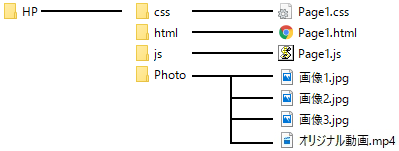

サイトを作るために必要なファイルを用意しましょう。
サイトを作るにはHTML・CSS・JavaScriptが必要なのでこれらを用意しないといけません。
まずは各フォルダ(html・css・js・Photo)を用意します。
用意したらhtmlフォルダ内にはHTMLファイル、cssフォルダにはCSSファイル・jsフォルダにはJavaScriptファイルを用意しましょう。
Photoフォルダには後程スライドショー等で使う画像を入れるために作っておきます。
※作った4つのフォルダをまとめておきましょう。新しくフォルダ(HP)を作り、先ほど作った4つのフォルダ(html・css・js・Photo)を入れましょう。
『メモ帳』を開いて「ファイル」→「名前を付けて保存」で「Page1.html」と作ってみましょう。
画像や動画は各自で用意してください。今回はファイル名を指定させていただきます。
全体的に下の図のようになっていれば問題ありません。

では早速コードを入力していきましょう。
最初に『
<!DOCTYPE html>
<html lang="ja">
<head>
<meta charset="shift-jis">
<title>サイトのタイトル</title>
</head>
<body>
<p>下に動画が流れます。</p>
</body>
次はjQueryを用意します。
jQueryをサイトに導入する方法はいくつかあります。
jQueryをダウンロードしてサイトに導入する方法やGoogleのサーバーでjQueryを使う方法があります。
今回は『GoogleのサーバーでjQueryを使う方法』を紹介していきます。
『
<script src = "https://ajax.googleapis.com/ajax/libs/
jquery/1.9.1/jquery.min.js"></script>
<script src = "../js/Page1.js"></script>
<link rel = "stylesheet" href = "../css/Page1.css">
これでサイトを作る準備が整いました。次の段階へ行ってみましょう！